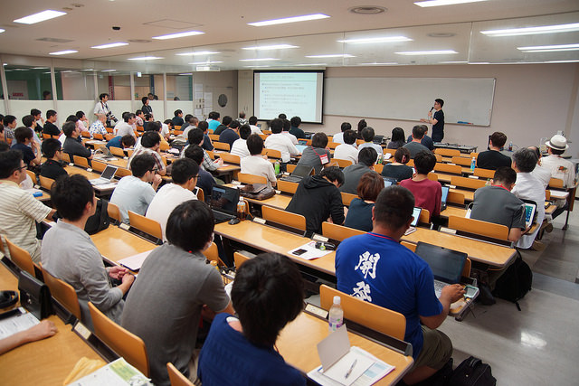
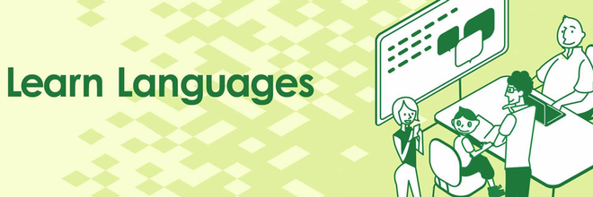
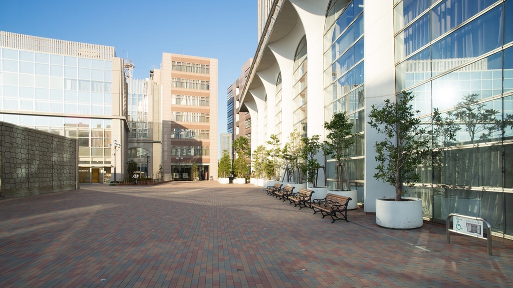
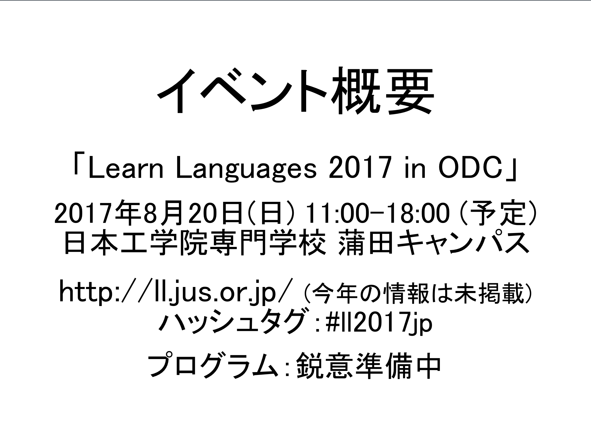
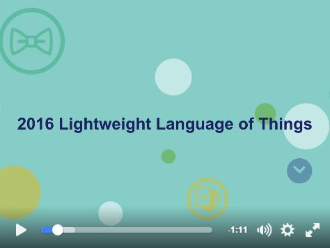
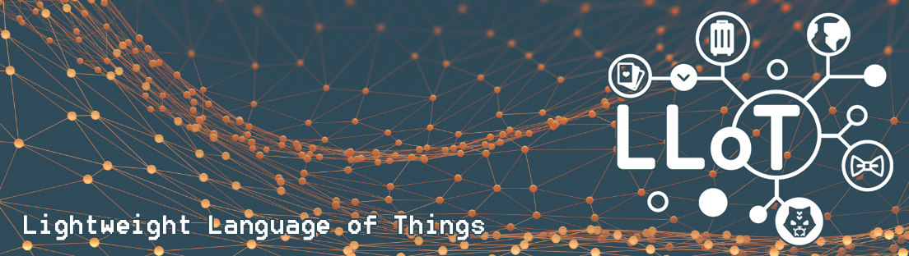
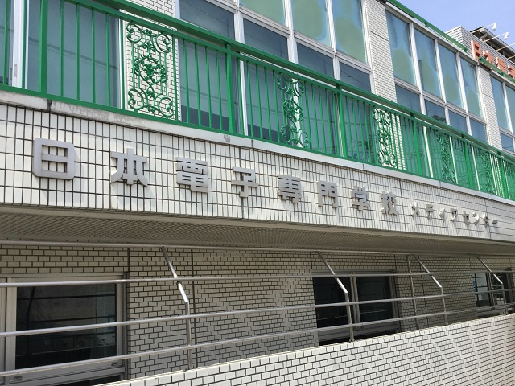
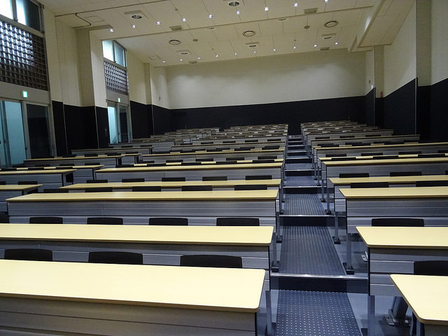

‘アナウンス’ カテゴリーのアーカイブ
「Learn Languages 2018 in ODC」当日のご案内

Learn Languages 2018 in ODCの本番も次の日曜日に迫りました。この記事では当日に関するご案内をお送りします。
参加登録について
LLイベントに参加される方は、イベントページにて参加登録をお願いします。参加登録は現在も受付中です。
また、今回のLLイベントはオープンデベロッパーズカンファレンス(ODC)の中で開催します。ODCへの参加登録は必須ではありませんが、当日はLLイベント以外にもいくつかのセッションが並行して行われますので、そちらにも参加される方はぜひご登録ください。
会場について
会場は日本工学院専門学校 蒲田キャンパスの3号館 7階です。最寄り駅はJRと東急の蒲田駅です。京急蒲田駅からはかなり歩きますのでご注意ください。それから、当日の受付開始は11:30です。受付開始時刻以降にご来場ください。
電源とネットワークについて
今回の会場は、各座席に電源コンセントが1口あるようです。適宜ご利用ください。また、今回は参加者向けの無線LANの提供はありません。インターネット接続が必要な場合は、ご自身でモバイルルータなどをご持参ください。なお、モバイルネットワークは多数の参加者が同時に利用するため、接続できないことがあります。あらかじめご注意ください。
書籍の販売と展示とプレゼントがあります
今年もIT系出版各社にご協力をいただき、プログラミング関係を中心とする書籍の販売と展示を行います。参加する出版社は以下の通りです。
- 販売：エスアイビー・アクセス/達人出版会/USP出版/ラムダノート
- 展示：アスキードワンゴ/インプレス/SBクリエイティブ/オライリー・ジャパン/技術評論社/翔泳社/マイナビ出版
なお、イベントのクロージングにて、展示に使用した見本誌などをプレゼントします。参加者数と見本誌の数量次第ではもれなく当選の可能性もあります。ぜひ最後までご参加ください。
懇親会について
懇親会に参加される方は、Peatixにて購入したチケットをご持参ください。なお、懇親会の申し込みは締め切りました。ご了承ください。
当日の天候について
当日の東京地方は曇ときどき晴れ、最高気温は34度という予報が出ています(8月23日午前8時発表)。今年はかなり暑い中での開催になりそうです。気をつけてご来場ください。また、現時点では台風の直撃は避けられそうですが、今後の進路にもご注意ください。
それでは、LLイベントの当日、会場にてお会いしましょう！
「Learn Languages 2018 in ODC」開催のお知らせ

プログラミング（プログラミング言語）ファンのみなさま、お待たせいたしました。今年もLL2018こと「Learn Languages 2018 in ODC」を開催いたします。
昨年もお知らせいたしましたが、2017年からLLイベントはいくつかの変更を行っております。
- イベントの正式名称としてずっと使ってきたLightweight Languageの看板を下ろし、Learn Languagesという名称に変更します。
- これまでは単独のイベントとして開催してきましたが、前回からはオープンデベロッパーズカンファレンス(ODC)の中で開催します。
イベント概要は以下の通りです。
「Learn Languages 2018 in ODC」(LL2018)
- 日時：2018年8月26日(日) 12:00-17:30 (予定)
- 会場：日本工学院専門学校 蒲田キャンパス (東京都大田区西蒲田5-23-22, 蒲田駅から徒歩数分)
- URL：https://llevent.connpass.com/event/95443/
- ハッシュタグ：#ll2018jp
- 参加費：無料 (懇親会は有料)
すでに参加申し込みは開始しております。上記URLのconnpassサイトからお申し込みください。
現在、プログラムの企画および登壇者の交渉を行っているところです。詳細は適宜公開していきますので、どうぞお楽しみに。
LLイベント当日に関するご案内

Learn Languages 2017 in ODCの本番も次の日曜日に迫りました。この記事では当日に関するご案内をお送りします。
ODCへの参加登録とチケットをお忘れなく
今回のLLイベントはオープンデベロッパーズカンファレンス(ODC)の中で開催します。ODCに参加するには登録が必要ですのでお願いします。登録方法はODCのウェブサイトを見てください。そして、参加登録するとチケットが発行されますので、その画面もしくは印刷したものをお持ちください。
なお、会場は日本工学院専門学校 蒲田キャンパスの3号館 7階です。最寄り駅はJRと東急の蒲田駅です。京急蒲田駅からはかなり歩きますのでご注意ください。
それから、参加登録は現在も受付中です！日曜日が空いている方、ぜひ来てください！
LTにぜひご出場ください
最後のセッションとしてライトニングトーク(LT)を行いますが、まだ2人しか応募がなく、枠が大量に余っています。言語関係の話題であればなんでも結構ですので、ぜひご発表をお願いします。発表希望の方は応募フォームにてご応募ください。当日会場でも受け付けます。
電源とネットワークについて
今回の会場は、各座席に電源コンセントが1口あるようです。適宜ご利用ください。また、今回は参加者向けの無線LANの提供はありません。インターネット接続が必要な場合は、ご自身でモバイルルータなどをのお持込をお願いします。なお、モバイルネットワークは多数の参加者が同時に利用するため、接続できないことがあります。あらかじめご注意ください。
書籍の販売と展示とプレゼントがあります
今年もIT系出版各社にご協力をいただき、プログラミング関係を中心とする書籍の販売と展示を行います。参加する出版社は以下の通りです。
アスキードワンゴ、オライリー・ジャパン、インプレス、オーム社、マイナビ出版、エスアイビー・アクセス、USP出版、達人出版会
なお、イベントのクロージングにて、展示に使用した書籍や、協賛社からいただいたグッズなどを抽選でプレゼントします。高確率での当選が予想されます。ぜひ最後までご参加ください。
懇親会について
懇親会に参加される方は、Peatixにて購入したチケットをご持参ください。なお、懇親会の申し込みは締め切りました。ご了承ください。
当日の天候について
当日の東京地方は曇、最高気温は28度という予報が出ています(8月18日8時発表)。例年のLLイベントは酷暑の中で開催することが多いのですが、今年は少し過ごしやすいかもしれません。また、降水確率40%ということで傘も用意した方がよさそうです。気をつけてご来場ください。
それでは、Learn Languages 2017 in ODCでお会いしましょう！
Learn Languages 2017 in ODCプログラム公開＆参加登録開始

8月20日(日)に開催します「Learn Languages 2017 in ODC」について、いくつかお知らせをします。
プログラムを公開しました
セッションは以下の4本です。詳細はプログラムのページをご覧ください。
- 基調講演：竹迫良範さん
- 関数型言語のすすめ
- プログラム言語鑑定団
- ライトニングトーク
ライトニングトークの発表者を募集します
プログラミング言語に関する発表ならなんでも結構です。募集要項はプログラムのページをご覧ください。
参加登録をお願いします
今年はOpen Developers Conference(ODC)の中で開催しますので、ODCのウェブサイトにて参加登録をお願いします。(登録必須です)
懇親会のチケットを発売します
懇親会は会場近くの中華料理店で行います。参加希望者はPeatixにてチケットをお買い求めください。
皆さんと会場でお会いするのを楽しみにしています。ご来場お待ちしております。
「Learn Languages 2017 in ODC」を開催します

2003年にLLイベントがスタートしてから今年で15年目になりますが、今回、いくつかの大きな変更を行うことにしました。要点は以下の通りです。
- イベントの正式名称としてずっと使ってきたLightweight Languageの看板を下ろし、Learn Languagesという名称に変更します。
- これまでは単独のイベントとして開催してきましたが、今回はオープンデベロッパーズカンファレンス(ODC)の中で開催します。
- 現在、プログラムの企画、および登壇者の交渉を進めています。
イベント概要は以下の通りです。
「Learn Languages 2017 in ODC」
- 日時：2017年8月20日(日) 11:00-18:00 (予定)
- 会場：日本工学院専門学校 蒲田キャンパス
- URL：http://ll.jus.or.jp/ (今年の情報は未掲載)
- ハッシュタグ：#ll2017jp
- 参加費：無料 (懇親会は有料)
さて、変更に至る経緯を書こうとしたのですが、どうしてもあれこれと書きたくなり、やたら長くなってしまいます。そこで、6/17(土)に開催されたOSC沖縄のライトニングトークにおいて、LLイベントに関する発表と、関連する経緯の説明を行いました。その映像と資料を公開しますので、そちらをご覧ください。
現在、プログラムの企画および登壇者の交渉を行っているところです。開催1か月前にあたる7月20日前後に公開できるよう進めていますので、しばらくお待ちください。追加情報は、LLイベントのウェブサイトやブログ、SNSなどをフォローしてください。
- ウェブサイト：http://ll.jus.or.jp/ (今年の情報は未掲載)
- ブログ：http://ll.jus.or.jp/blog/
- Twitter：@lljapan
- Facebookページ：LLイベント
長年使ってきた愛着のあるイベント名を変更することは勇気がいりましたが、このイベントを継続すること、そしてプログラマーの皆さんに有益な情報を提供し、多くの方にそれを知ってもらうことが運営側のやりたいことであると考え、この決断に至りました。今回の衣替えを機に新たな方々にお集まりいただき、このイベントを盛り上げてもらえたらうれしいです。これからもLLイベントをよろしくお願いします。
LLoT当日に関するお知らせ

LLoTの本番もいよいよ明日に迫りました。この記事では当日に関することをいくつかお伝えします。
チケットをお忘れなく
今回もPeatixのアプリでチケットのQRコードを読み取ることによる来場者チェックインを実施します。チケットを購入された方は、チケットのQRコードを必ずご用意ください。なお、QRコードの用意に関しては、こちらの記事もご覧ください。
当日券もあります
昼の部については残席に十分な余裕があるため、当日券を発売します。料金は2000円です。ちなみに前売券も8/26(金)の24:00まで発売しています。事前にチケットを購入できる方はこちらをご利用ください。
夜の部(LLoT Night)はすでに前売を終了していますが、若干の当日券を用意できる見込みです。参加希望の方は会場の受付にてお問い合わせください。
参加者向けの無線LANを提供します
今年も参加者向けの無線LANを提供します。接続に関する情報は会場にてご確認ください。
バッテリーの充電をお忘れなく
電源コンセントの提供はありません。ご自身でモバイルバッテリーを用意するなどの方法でご対応ください。
開催記念Tシャツについて
Tシャツ付きチケットを購入された方へのTシャツの進呈は入場時に行います。また、当日のTシャツ販売は、Tシャツの残り状況を見ながら判断します。販売を行う際には場内にてアナウンスします。
昼食について
飲食店は、会場を出て右に進み、広い通り(職安通り)まで出ると、多数あるようです。会場付近の地図はこちらです。
販売と展示があります
今年もIT系出版各社にご協力をいただき、プログラミング関係を中心とする書籍の販売と展示を行います。参加する出版社は以下の通りです。
アスキードワンゴ、オーム社、技術評論社、SBクリエイティブ、オライリー・ジャパン、達人出版会、マイナビ出版、USP出版
さらに、今年は「キーボードにこだわろう」というセッションに関連して、キーボードの展示も行われる予定です。
なお、展示に使用した書籍や、協賛社からいただいたグッズなどをプレゼントする抽選会を16:30ごろから行います。恒例のボール投げを行いますので、ぜひ受け取ってください。
LLoT Nightについて
夜の部(LLoT Night)が行われるwatford新宿店は、昼の部の会場(日本電子専門学校)から徒歩10分ぐらいです。経路はGoogleマップによるとこんな感じです。
昼の部の終了が16:40ごろ、夜の部の開場は17:30です。少し時間がありますので、新宿近辺を散策してからお越しください。(暑い中お待たせしてすみません)
当日の天候について
当日の東京地方は曇ときどき雨、最高気温は29度という予報が出ています(8月26日8時発表)。明日は傘も用意した方がよさそうです。気をつけてご来場ください。
それでは明日、LLoTでお会いしましょう！
「帰ってきたデモ自慢」出場選手募集のお知らせ
LLoTでは「帰ってきたデモ自慢」セッションを開催します。あなたの自信作をアピールするまたとないチャンスです。素晴らしい作品には惜しみない賞賛が、つまらない作品には容赦ないブーイングが与えられることでしょう。この試練に立ち向かう勇者よ来たれ!
- 日時: 2016年8月27日(土) 19:00〜
- 場所: 東京新宿歌舞伎町「watford新宿店」
- 対象作品: 自作のソフトウェアまたはハードウェアまたはその両方
- 応募資格: 当日会場で発表できること。会場からのツッコミに耐えられること。
- 募集人数: 若干名
- 持ち時間: 1人5分
- 応募方法: 応募フォーム←から応募してください。作品の概要やアピールしたい点もお忘れなく。
- 締め切り:
7月17日(日)23:598月20日(土) 23:59まで延長します。
※応募者多数の場合は実行委員会で選考させていただきます。
なぜLightning Talks (LT)ではなくデモか?
2005年のLLDN (Lightweight Language Day and Night)では新宿歌舞伎町のロフトプラスワンをお借りして通称LLNightを開催しました。出し物は「だめ自慢」と「デモ自慢」。だめ自慢は2014年のLL Diverで「帰ってきただめ自慢」として復活しましたが、今回歌舞伎町にLLイベントが帰還するにあたり、初心に帰る意味で「デモ自慢」を復活させることにしました。
Lightning Talks (LT)でなくデモ。そこにはMITメディアラボの”Demo or Die” (デモかさもなくば死か)の精神が継承されています。トークでアピールするのではなく実際に動く作品を見せる。開発者冥利に尽きると言えるのではないでしょうか。
2005年のデモ自慢を見ると錚々たる発表者名が並んでいます。http://ll.jus.or.jp/2005/details/program.html
- Gaucheで3次元プレゼンテーション 久井 亨
- aWebアノテーションツール alog (Ruby) 沢田洋平
- Rabbit (Ruby) 須藤功平
- SNSエンジン OpenPNE (PHP)手嶋 守(OpenPNEプロジェクト)
- RubyでApacheを拡張しようかずひこ(日本Rubyの会/ネットワーク応用通信研究所)
- ppencode (Perl)竹迫良範(Shibuya Perl Mongers/ドリームアーツ)
帰ってきたデモ自慢も5年後10年後に伝説のイベントとして語り継がれることでしょう。
LLoT Webサイト公開＆協賛募集

8月27日(土)に開催するLL of ThingsのWebサイトを公開しました。プログラムやチケット発売については、決まり次第お知らせします。
また、LLoTでは協賛を募集します。ご支援いただける企業の方は、募集要項をご覧の上、ご応募ください。
2016年のLLイベントは「LLoT」！ 8.27日本電子専門学校にて開催

例年に比べて始動の遅かった今年のLLイベントですが、ようやく会場の確保ができ、イベント名称も決定しましたのでお知らせします。
- 名称：Lightweight Language of Things (通称：LLoT)
- 日程：2016年8月27日(土)
- 会場：日本電子専門学校 9号館 メディアセンター
今回の会場となる日本電子専門学校は、LLイベントとしては2004年の「LL Weekend」以来、12年ぶりにお借りします。先日、下見に行きましたが、数年前に改装されたとのことで、きれいになっていました。

プログラムやチケット発売については、準備ができ次第お知らせします。また、日本電子専門学校を利用できるのは17時までのため、夜は別会場にて何らかの催しを行うことを検討しています。こちらにつきましても、決まりましたらご案内します。
まずは8月27日を空けておいていただければ幸いです。
今年もLLイベントをよろしくお願いします。
LL Ring Recursive来場御礼＆アンケートのお願い
2015年9月5日（土）に開催されたLLイベント「LL Ring Recursive」は、おかげさまで無事に終了いたしました。今年もたくさんの方にご来場いただきありがとうございました。
今後のLLイベントのためにアンケートを実施しております。
次のイベントをより良いものにするため、LL Ring Recursive にご参加いただいた方はもちろん、残念ながらご参加いただけなかった方からのご意見もお待ちしております。忌憚なきご意見・ご感想をぜひお寄せくださいませ。
アンケートへのご回答は「LL Ring Recursiveアンケート」のページからお願いいたします。